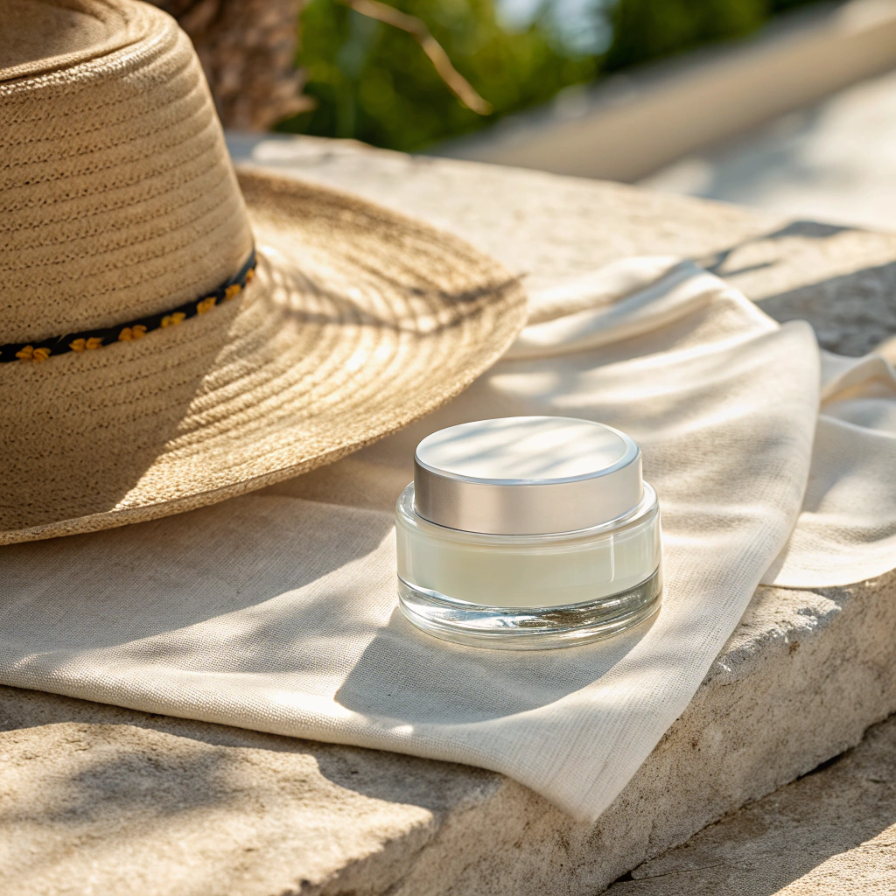
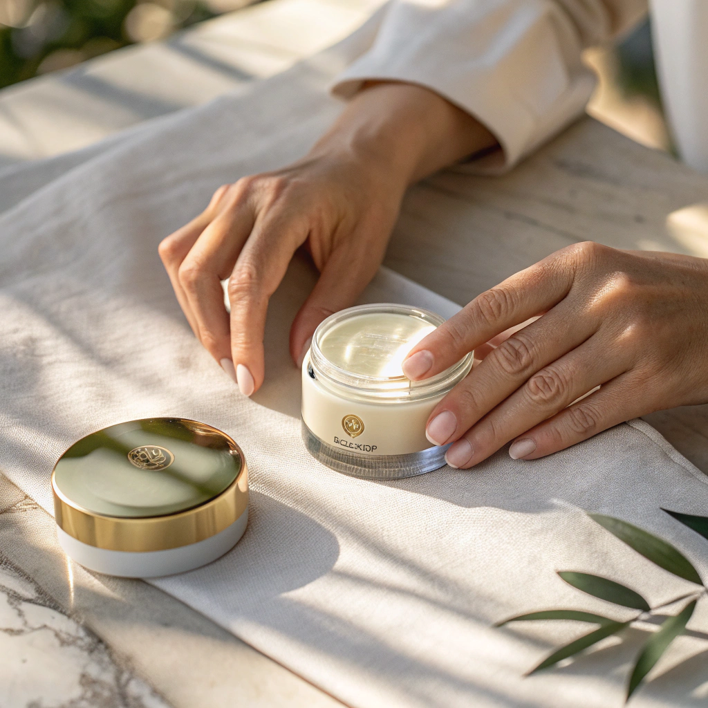
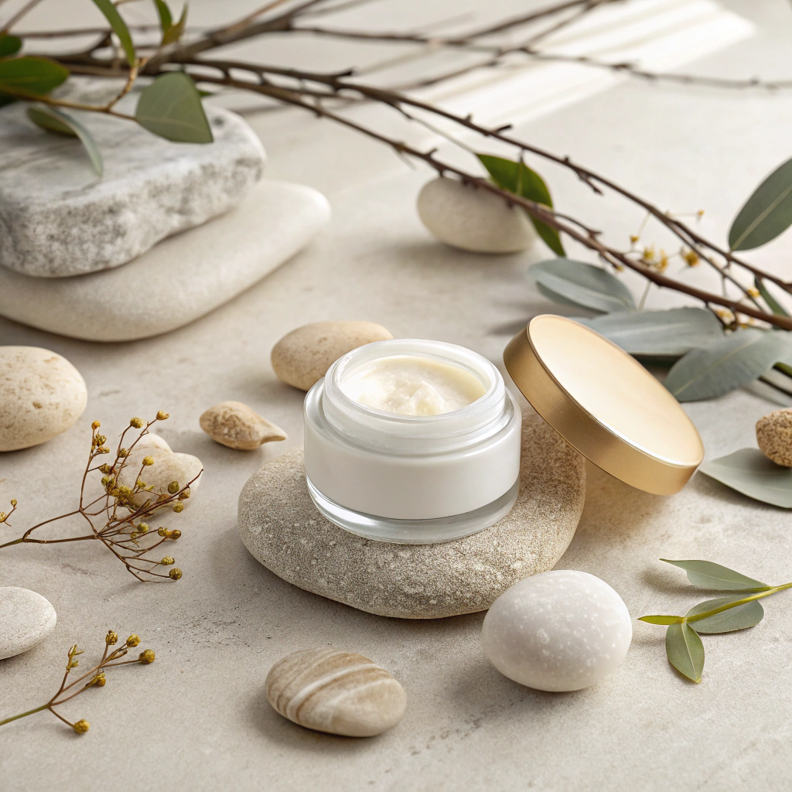
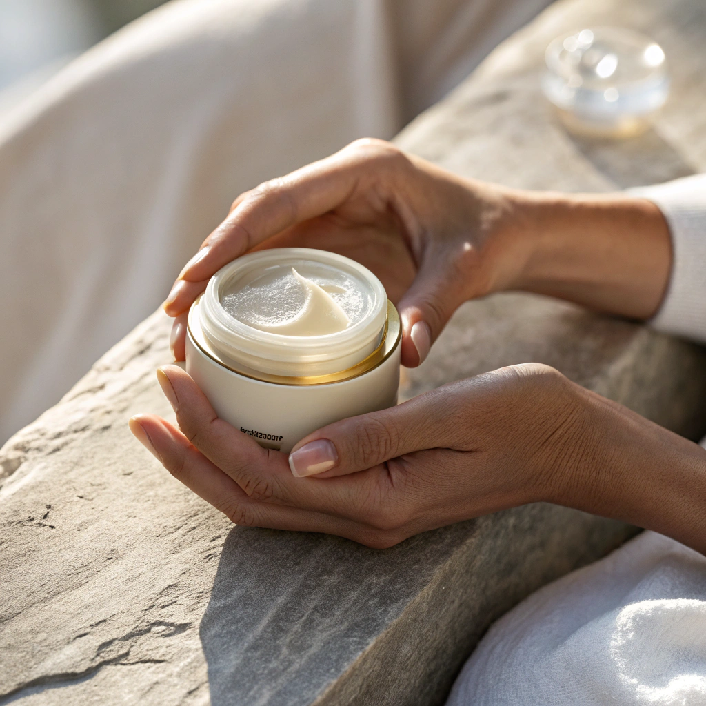
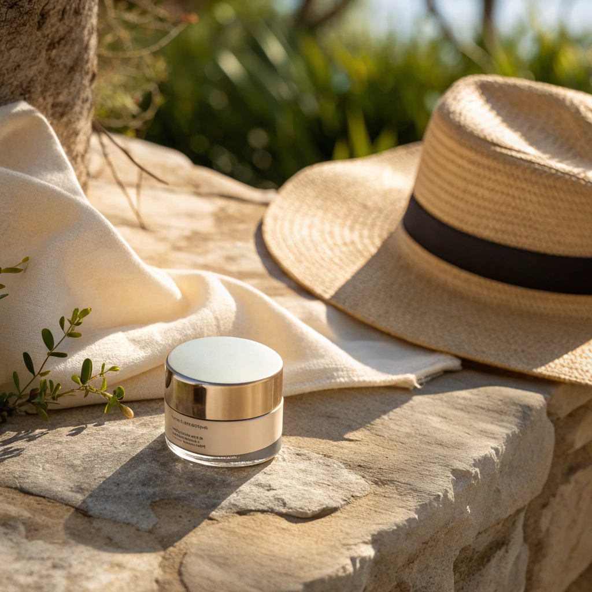

Koruma Önerileri
Dengeyi koru. Cildini kollamayı öğren.
Cilt tipine göre değişen koruma ihtiyaçları için hazırlanmış, günlük hayatta uygulanabilir ve cildi dış etkenlere karşı destekleyen öneriler.
Sınır koymak da bir bakım biçimi...
Kuru Cilt
 DokunKoruma Ritüeli
- Nem Kalkanı Güneşe çıkmadan önce cildini mutlaka nemle doyur.Nem, kuru cildin ilk savunmasıdır.
- Güneşle Mesafe Yüksek alkollü ve matlaştırıcı ürünlerden kaçın. Cildin sert değil, nazik korumaya ihtiyaç duyar.
-
Yenileme Anı
Gün içinde termal su veya hafif nemlendiriciyle tazele. -
Niyet
“Cildimi korurken yumuşak kalmayı seçiyorum.”
Yağlı Cilt
 DokunKoruma Ritüeli
-
Hafif Koruma
Su bazlı, gözenekleri tıkamayan güneş koruyucular seç. Cilt nefes alsın. -
Dengeyi Hatırla
Fazla arındırmak, cildi daha çok yağ üretmeye iter. Koruma baskı değil dengedir. -
Mat Ama Canlı
Güneşten korunurken cildin doğal parlaklığını bastırma. -
Niyet
“Dengede kalmak benim gücüm.”
Hassas Cilt
 DokunKoruma Ritüeli
-
Sessiz Formüller
Parfümsüz, mineral filtreli ürünleri tercih et. Az içerik, çok huzur. -
Gölgeyle Dost Ol
Doğrudan güneşten kaçın.Şapka ve gölgeyi ritüeline dahil et. -
Yavaş Uygula
Ürünü bastırma, cilde bırak. -
Niyet
“Nazik olmak da güçlü olmaktır.”
Karma Cilt
 DokunKoruma Ritüeli
-
Bölgesel Bilinç
T bölgesine hafif, yanaklara daha besleyici dokunuşlar yap.Her bölge aynı değildir. -
Esnek Koruma
Tek bir ürünle her şeyi çözmek zorunda değilsin. -
Uyum Anı
Cildinin o günkü ihtiyacını gözlemle. -
Niyet
“Kontrol etmiyorum, uyumlanıyorum.”
Normal Cilt
 DokunKoruma Ritüeli
-
Koruma = Süreklilik
Dengede olan cilt düzen ister. Güneş korumasını alışkanlık yap. -
Aşırılıktan Kaçın
Ne fazla ürün, ne ihmal... -
Sessiz Güç
Basit ritüeller uzun vadede etki eder. -
Niyet
“İyi olanı korumayı seçiyorum.”